Construct hole features
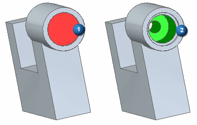
In the next few steps, construct a simple (1) and a counterbore (2) hole feature.
First, hide the base coordinate system and the existing dimensions using PathFinder, and then change the view orientation.
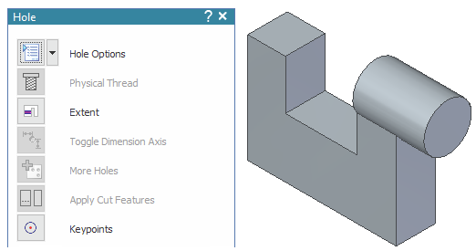
-
Choose the Home tab→Solids group→Hole command
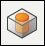
.
On the Hole command bar, click the Hole Options button.
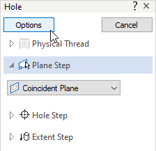
The Hole Options dialog box displays.
Set the following hole properties for a Simple type hole:
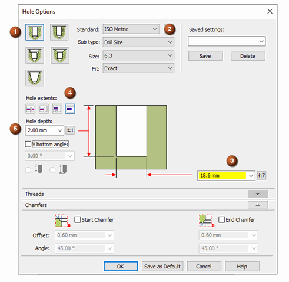
-
Set the Type to Simple (1).
-
Set the Standard (2) to ISO Metric and click Yes on the Tolerance dialog box.
-
Set the Diameter (3) to 18.6.
Note:The diameter field turns yellow to denote that the diameter value for the hole type is not in the hole database.
-
Ensure the Hole extents option is set to Finite (4).
-
Enter a Hole depth (5) of 2.
-
On the Hole Options dialog box, click OK.
Position the cursor over the reference plane shown and click.
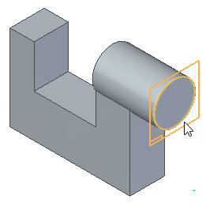
Move the cursor to the center as shown, and notice that the center indicator displays.
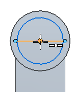
Click to place the hole profile.
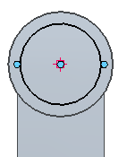
On the Home tab→Close group, choose the Close Sketch command  .
.
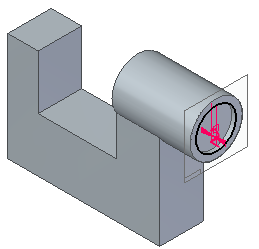
On the command bar, click Finish.
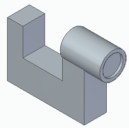
The Hole command is still active.
Set the following hole properties for a Counterbore type hole:
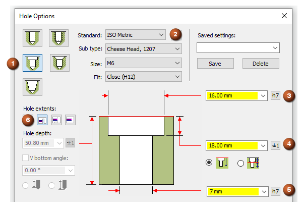
-
Set the Type to Counterbore (1).
-
Set the Standard (2) to ISO Metric and click Yes on the Tolerance dialog box.
-
Set the Hole Diameter (3) to 7.
-
Set the Counterbore Diameter (4) to 16.
-
Set the Counterbore Depth (5) to 18.
-
Ensure the Hole extents option is set to Through Next (6).
Note:The value fields turn yellow when the values for the hole type are not in the hole database.
-
On the Hole Options dialog box, click OK.
Move the cursor over different faces of the model, and notice that a preview image of the results display.
Move the cursor to the plane as shown, and click.
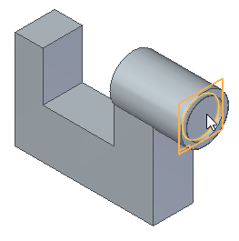
Move the cursor to the center as shown, and notice that the center indicator displays.
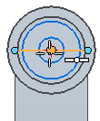
Click to place the hole profile.
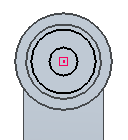
On the Home tab→Close group, choose the Close Sketch command  .
.
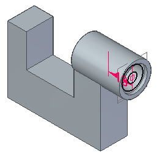
On the command bar, click Finish.
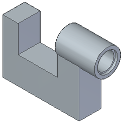
Click Cancel to end the Hole command.
On the Quick Access toolbar, click the Save button  .
.
It is good practice to save the model regularly, but it can be easy to forget. Set an option to remind yourself to preserve open documents by saving them at user-defined time intervals.
-
On the File menu, choose the Settings tab→Options command.
The Solid Edge Options dialog box is displayed.
-
Click the Save tab, and then select the following options:
-
Automatically preserve documents by
-
Prompting me to save all documents every 60 minutes
-
-
Click Apply and close the dialog box.